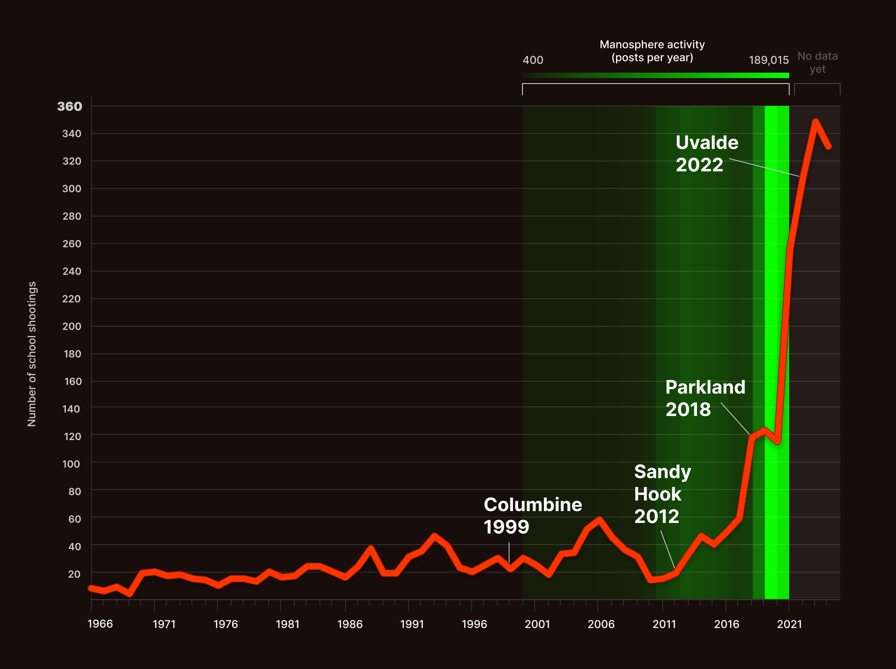
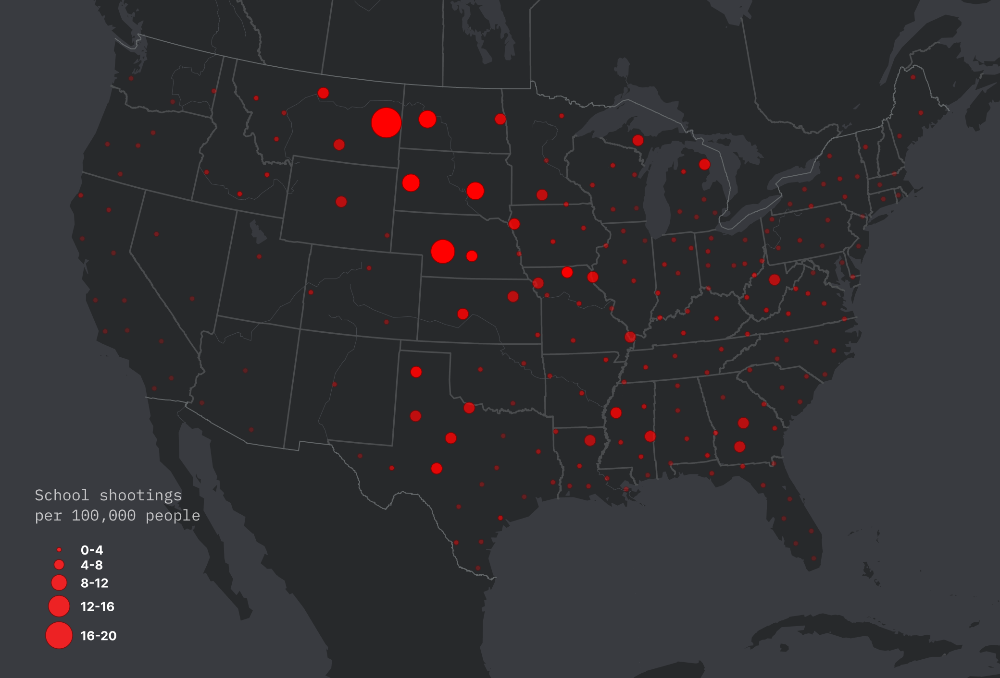
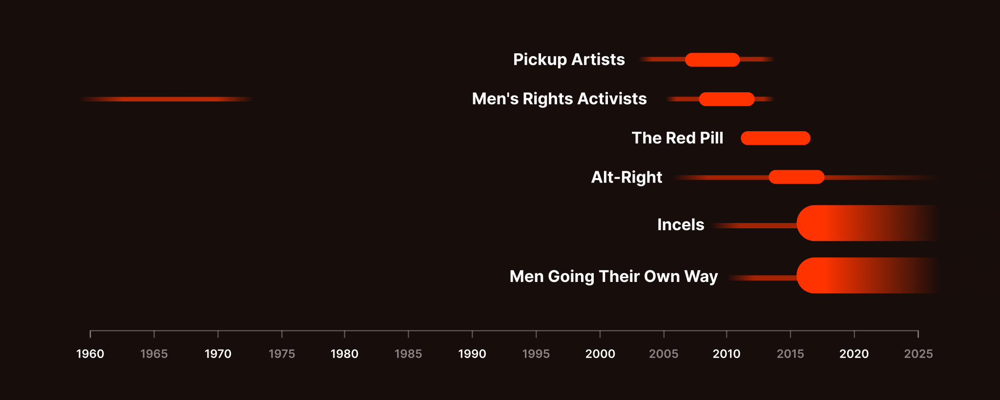
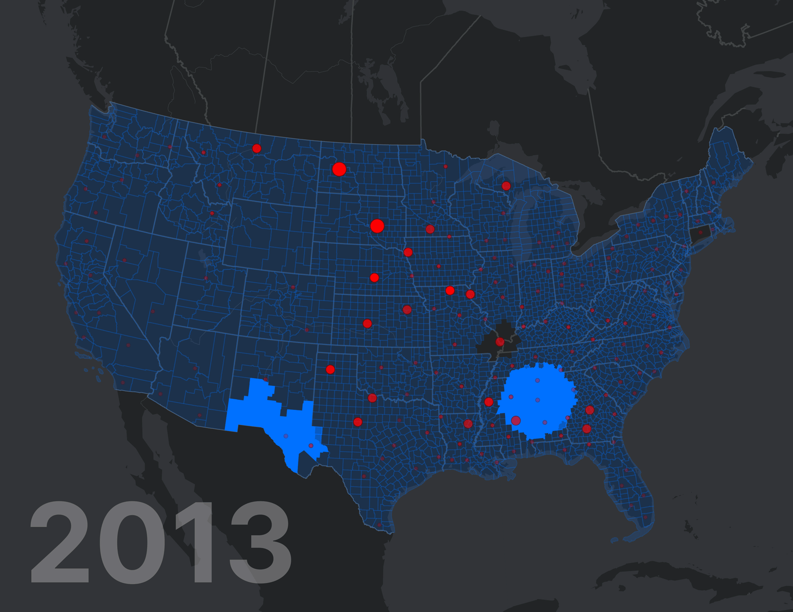
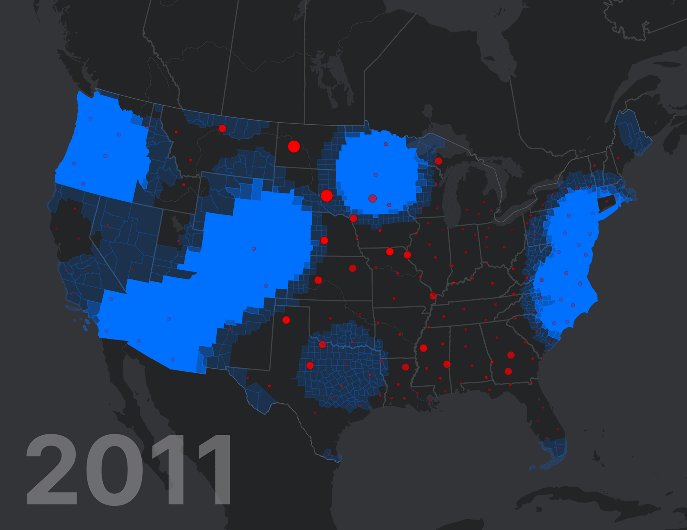
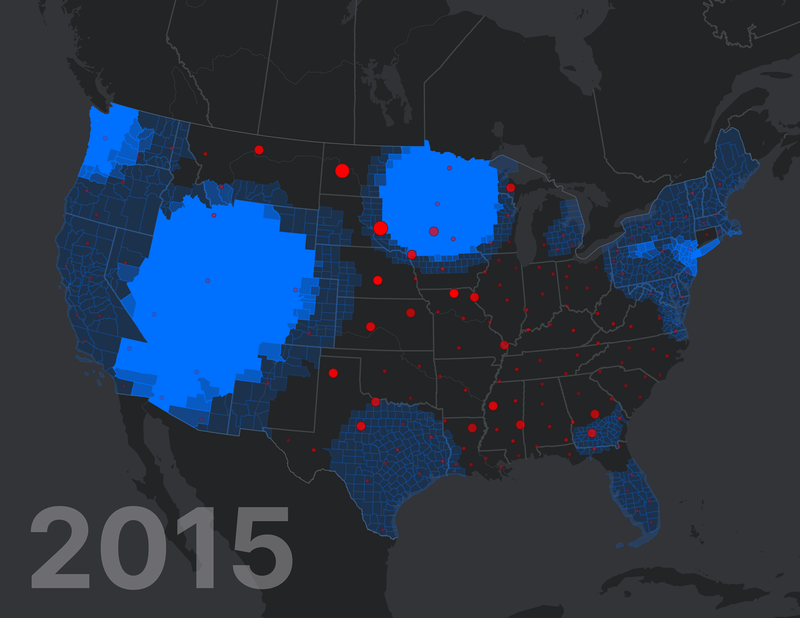
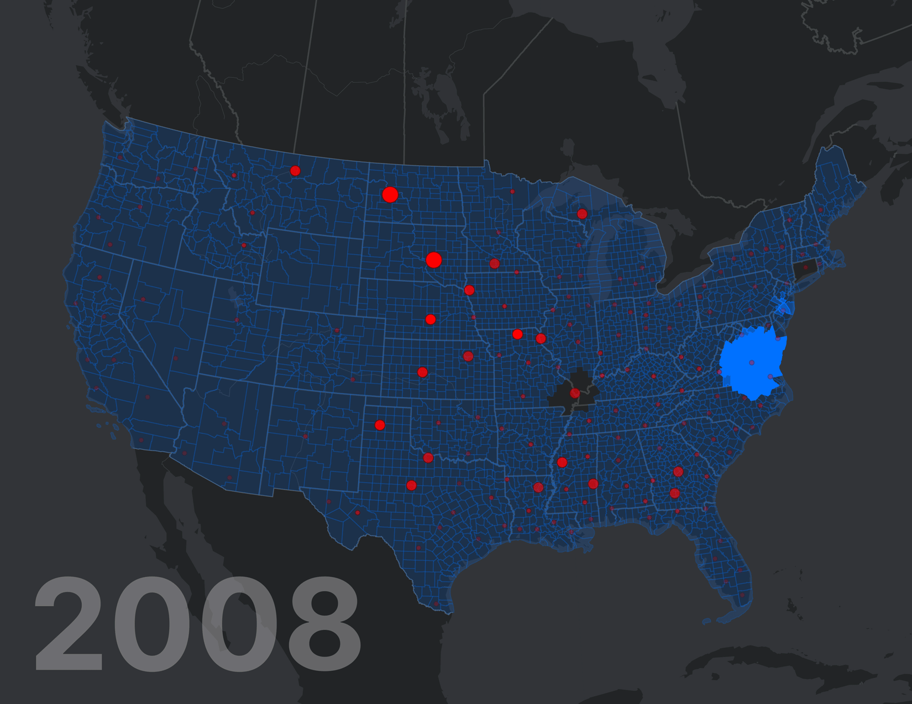
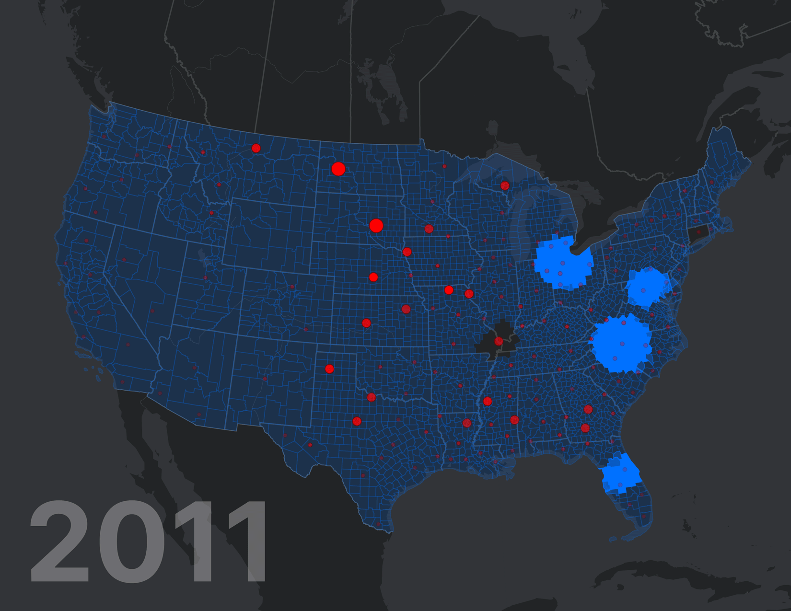
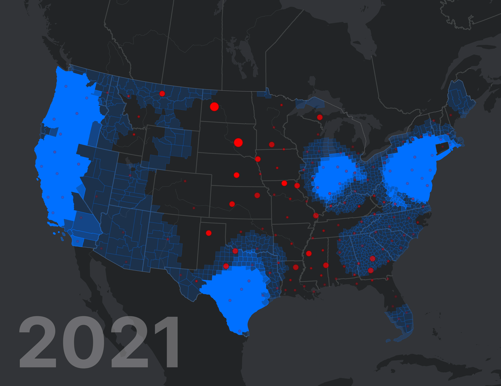
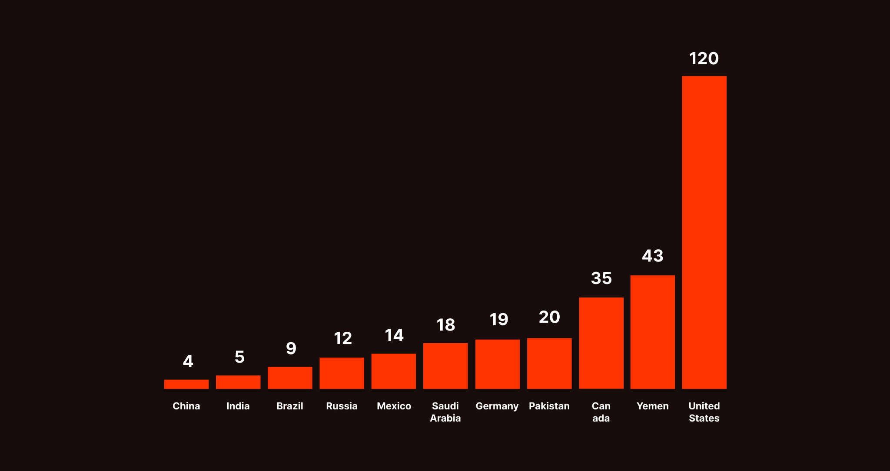

Are school shootings rates higher in areas where misogynist search topics are trending?
ArcGIS
R
RAWgraphs
Google Trends
US Census
K-12 SSDB
96% of school shooting perpetrators are male. I looked for a spatial correlation between Google search interest in Manosphere-related topics and areas with higher rates of school shootings.
The answer: it's complicated. I found an anti-correlation.
Content Warning: Mentions of violence, discrimination, and self-harm.

School shootings have seen a sharp increase while Manosphere movements have grown in popularity.
Source: K-12 School Shootings Database and The Evolution of the Manosphere across the Web (Ribeiro et al., 2021).
Where are school shootings more likely to occur?
Since 2017, the number of school shootings per year has more than tripled compared to previous decades.
I was curious about where this is happening. I could not find a map of school shooting incidents that is normalized by population density, so I made one.
I used data from the K-12 School Shootings database by David Riedman which dates back to 1966. It includes a detailed list of over 3000 shooting incidents, which I compared to similar datasets from the Washington Post and the Gun Violence Archive to rule out any data collection biases.

School shooting incidents per 100,000 people. Larger dots represent higher rates.
It turns out that certain areas of the Midwest and the South are much more likely to experience school shootings.
This is a significantly different pattern from most maps of school shooting numbers which show the highest concentrations in densely populated areas like New York City, Chicago, and parts of California.
The Manosphere
During this same time frame, extreme misogynist movements have been proliferating and prospering online.
These movements have conglomerated into a loose network called the Manosphere. It includes online communities, forums, subreddits, influencers, podcasters, and streamers who have often been linked with online harassment and violence in the real world, as well as extremist political organizations. Analysis of these movements has shown that the newer communities (Incels, Men Going Their Own Way, and The Red Pill) are far more toxic and misogynistic than the older ones (Ribeiro et al., 2021).

A timeline of Manosphere movements. Thicker lines represent the height of a movement's popularity.
Source: The Evolution of the Manosphere across the Web (Ribeiro et al., 2021).
Could there be a spatial relationship between where these topics are trending in Google searches and where school shootings have increased?
My hypothesis was that they are happening in the same places.
A 2004 study found that rampage-style school shootings were not a national problem, but series of local problems that occurred in "red states," where perpetrators were boys who were mercilessly and routinely bullied, and that their violence was retaliatory against threats to their manhood. It appears that this may still be relevant twenty years later.
A 2024 Pew Research survey on how Americans see men and masculinity found partisan differences in views, in which "Republican men stand out in views of their own masculinity, changing gender roles and men's progress in recent decades."
"Masculinity is the single greatest risk factor in school violence. This uniformity cuts across all other differences among the shooters."
Adolescent Masculinity, Homophobia, and Violence: Random School Shootings 1982-2001 by Michael S. Kimmel and Matthew Mahler.
Looking for patterns in Google Trends
To find out where people are Googling these topics, I whittled down a list of terms and websites using replication data from a study, The Manosphere and Politics (Barnes & Karim, 2025), and entered as many as possible into the Google Trends tool.
Google Trends normalizes each search term and indexes the results from 0 to 100, where 100 is the maximum search interest for the time and location selected. Spikes in the data represent an acceleration in popularity, relative search interest in the topic compared with itself.
Interestingly, many of the keywords did not have sufficient data. This might be because of the fringe nature of extremist groups. I settled on a handful of topics, one for each Manosphere category, that had the best quality data for popularity.
Results
The results were not what I expected. As if I had tried to mix oil and water, search interest hot spots seemed to be avoiding areas with higher rates of school shootings.
These maps show statistically significant Google Trends hot spots (Getis-Ord Gi* statistic, in blue) and school shooting incidents per 100,000 people (red).
Note: there is an absence of data from Connecticut and the bottom tip of Illinois.

Search term: The Red Pill

Search term: A Voice for Men, one of the most popular Men's Rights Activists blogs

Search term: Jordan Peterson. This period of popularity data coincides with the rising popularity of Incel and MGTOW movements.

Search topic: Incel. Search topics are broader concepts of related terms, including misspellings, while search terms are exact phrases.

Search term: Men Going Their Own Way. According to the Guardian, the extremist men of MGTOW are focused on the dangers of interacting with women and condone domestice violence.

Search topic: Looksmax.org. The most active Incel community in recent years, veiled as a self-improvement forum. "Failed" men are sometimes actively encouraged to self-harm.
Interpretations
I had to accept the null hypothesis: that there are no spatial relationships to be found.
However, a secondary hypothesis had emerged: that there may actually be a correlation but with cold spots, not hot spots.
To understand this I needed to correct how I was interpreting popularity on Google Trends. These hot spots, or spikes, are markers of acceleration of search interest in a topic. According to this explanatory article by Simon Rogers, a data journalist at Google, they are often a reflection of what's going on in the world. The hot spots are reactions to a topic that entered the public consciousness, via the news, for example, but I had been considering them as spikes in the activity of the topic itself. What these maps may demonstrate is spikes of interest in areas where these concepts are making headlines and internet users are compelled to learn more. The partisan nature of news in America may also explain where the spikes are taking place.
So what is the relationship between the Manosphere and school shootings?
While it may be easy to visualize a connection between school violence the dangerous ideas promoted by Manosphere figures, I am not suggested causality. Millions of viewers may be drawn to these ideologies, but most of them are not committing violent acts. Rather, maybe it points to the wider problem of a state-advocated hegemonic toxic masculinity that rejects the idea of gender pluralism, takes pride in homophobia, and is supported by movements and people who use violence and harassment to solve problems. This hegemony "staunchly enforces heterosexuality as the only acceptable form" of masculinity and "operates as an ideal that few, if any, men can realistically attain" (Schmitz and Kazyak, 2016), carving pathways in the direction towards harmful online communities that purport to help men.
Further Analysis
First, I'd like to calculate the correlation coefficients between Trends cold spots and higher rates of school shootings, as there does appear to be a relationship there.
Second, it was suggested that I find DNS location data for Manosphere website visitors, but this kind of data is not readily accessible for privacy reasons.
Next, I'd like to add data about gun laws across the country, since an abundance of firearms is another very American problem.

The estimated number of civilian-held legal and illicit firearms per 100 people in 2017. Source: Small Arms Survey and Government of Canada.
"A variety of causes may contribute to school shootings, and therefore no single dynamic is sufficient to explain all, or even a subset, of such events. The causes may emerge from a variety of levels, ranging from the individual causes, community contexts, and social/cultural contexts in which the events occur."
Research in School Shootings, Glenn Muschert, 2007.
This was the final project for my Spring 2025 semester at Pratt Institute.
INFO 609 Intro to GIS
Professor John Lauermann
INFO 658 Information Visualization
Professor Chris Alen Sula
INFO 664 Programming for Cultural Heritage
Professor John Decker
For even more details about the methodology and supporting research, please visit the project site.